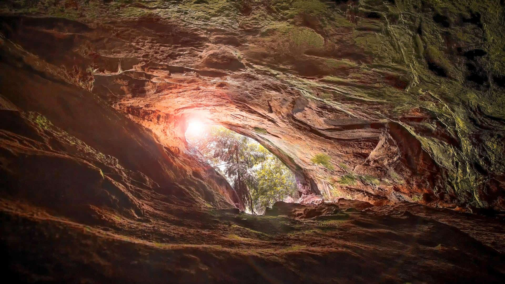
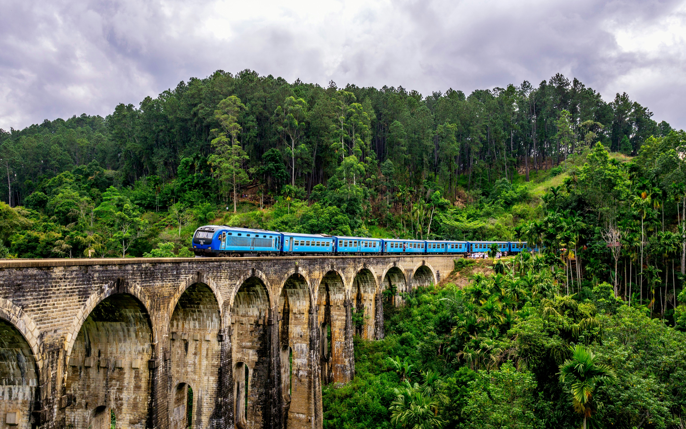
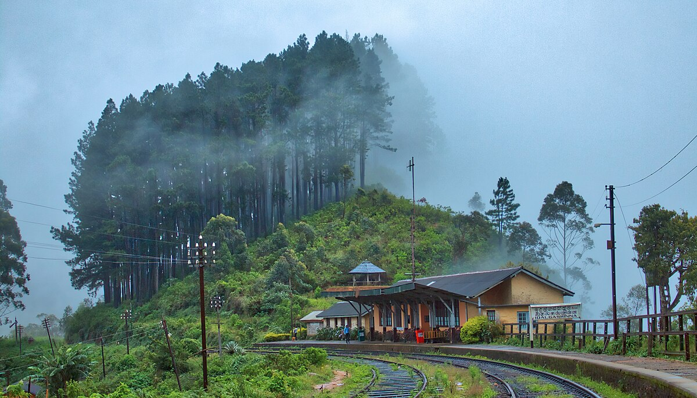
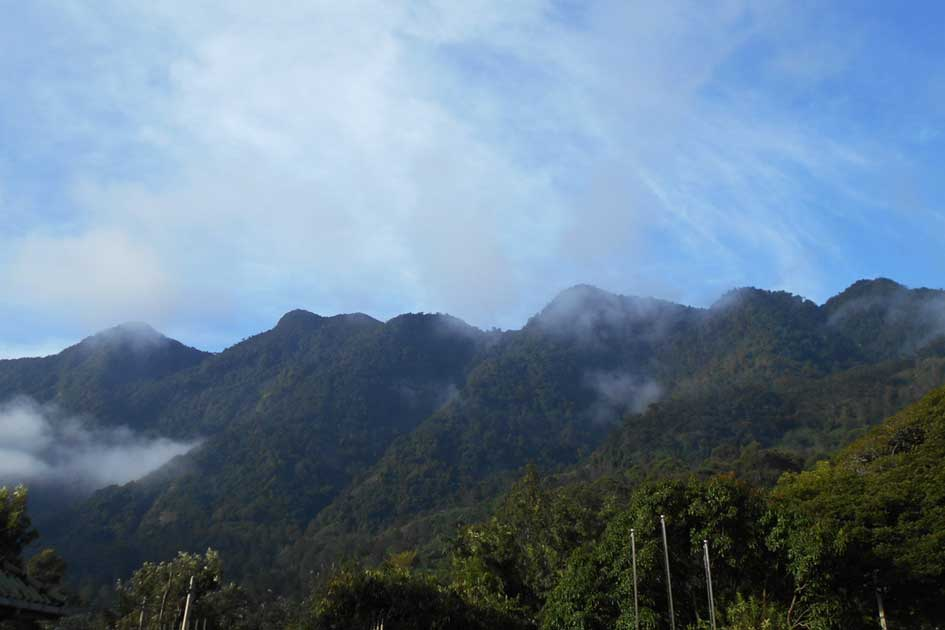
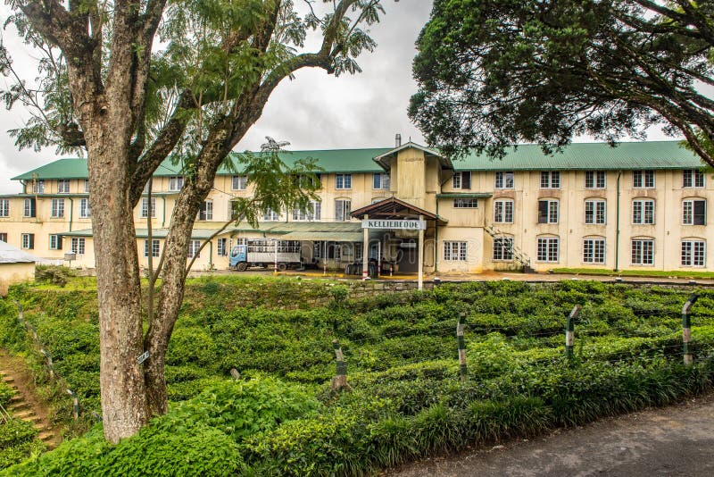
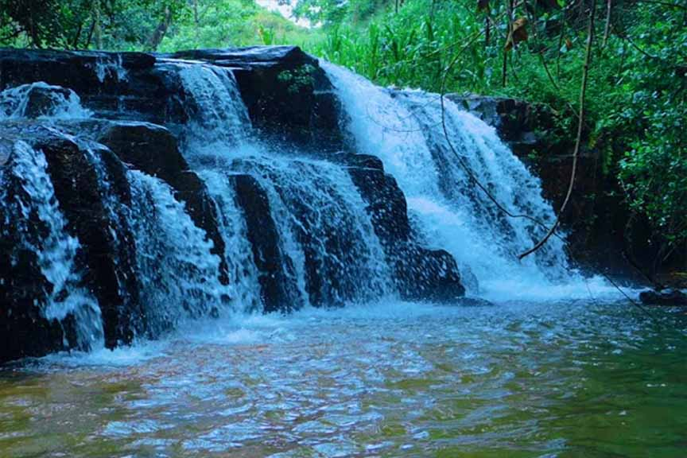
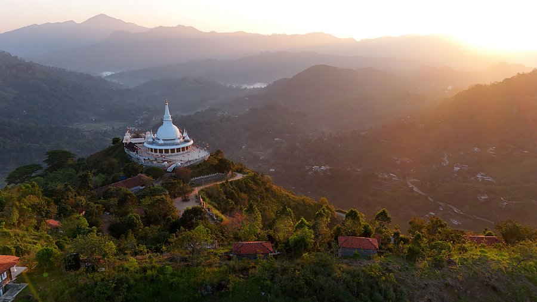
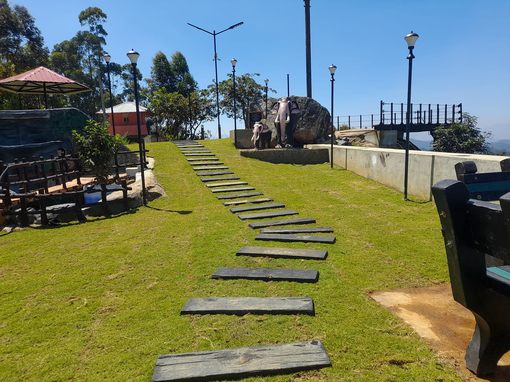
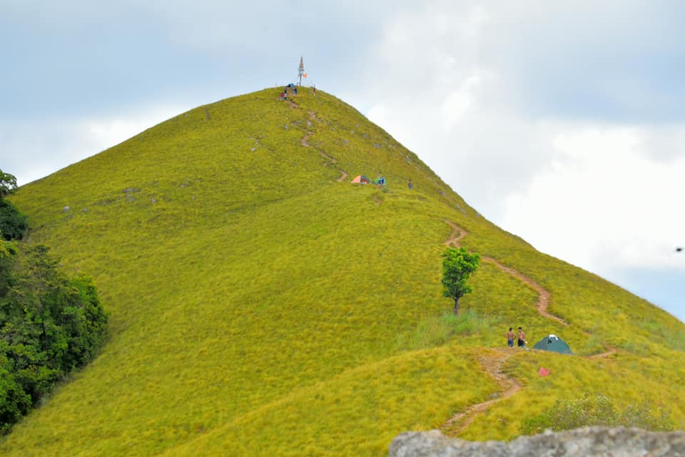

Ravana Cave – Ella
The Ravana Cave, about 2 km from Ella, is believed to have been used by King Ravana to hide Princess Sita. Located 1,370 meters above sea level, it’s a small but historic site with ancient tunnels and archaeological findings dating back to 20,000 BC.

Nine Arch Bridge – Ella
The Nine Arch Bridge, or “Bridge in the Sky,” is a 20th-century marvel between Ella and Demodara. Spanning 300 feet and nearly 100 feet high, it connects two hills on the Badulla–Colombo railway. It’s a popular spot for photographers—especially when a train crosses.

Thangamale Bird Sanctuary
Thangamale Bird Sanctuary near Haputale is a serene haven rich in birdlife. Home to species like the Yellow-eared Bulbul, it’s perfect for nature lovers. The misty trails offer scenic views of valleys and tea estates.

Idalgashinna Railway Station
Famed for its breathtaking views of misty mountains, this station sits at 1,615 meters. Built during the British era, it retains charming colonial features and is the starting point for the scenic Ohiya hike.

Namunukula Mountain Range
Rising to about 2,035 meters, it is the tallest peak in the Uva region. Meaning “Nine Peaks,” it offers stunning views of Badulla and Ella. It's a favorite hiking spot with trails through forests rich in wildlife.

Haputale Kelliebedde Tea Factory
A must for an authentic experience of the island's iconic tea culture. This factory offers an engaging journey into the world of Ceylon tea production set against stunning natural beauty.

Kombukara Nature Pool & Waterfall
Located in Balleketuwa, this hidden natural gem is a serene escape into unspoiled nature. Just 12 km from Ella, it remains one of the area’s best-kept secrets.

Mahamevnawa Buddhist Monastery
A peaceful mountain retreat for Theravada monks. It offers a serene space where visitors can experience spiritual calm amid stunning natural beauty.

Porawagala Viewpoint – Bandarawela
Sitting about 3,700 feet above sea level, it offers breathtaking panoramic views of the surrounding hills and valleys, surrounded by lush tea plantations.

Narangala Mountain
Standing 1,527 meters high, it is a popular spot for hikers. It offers a thrilling climb and stunning panoramic views, making it a favorite for adventurers.